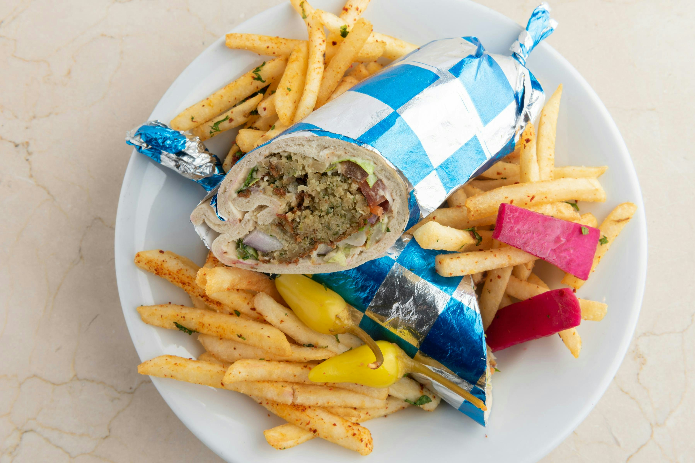

Home
Chicken Shawarma

Description
Shawarma is a Levantine Arab meat preparation, where meat is placed on a spit and may be grilled for as long as a day. Shawarma can be served with various toppings and vegetables such as tahini, hummus, amba, or pickled cucumbers. It is mostly wrapped in pita bread. As most of us don't have a rotating spit at homes, this recipe is cooked on the stovetop. After all, in this fast life who is gonna wait for a whole day?
Ingredients
- 3 tablespoons Greek yogurt
- 3 tablespoons chile sauce
- 2 tablespoons white vinegar
- 2 tablespoons barbeque sauce (such as HP®)
- 1 tablespoon dark soy sauce
- 4 cloves garlic, minced
- ½ teaspoon ground white pepper
- ½ teaspoon ground black pepper
- 1 pinch ground cinnamon
- 1 pound boneless chicken breast, cut into cubes
Directions
- Preheat the oven to 350°F.
- Mix ingredients in a bowl.
- Shape dough into small balls.
- Place on baking sheet.
- Bake for 15 minutes or until golden.